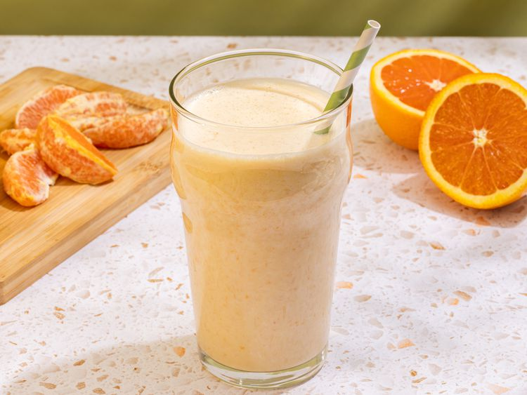

Orange Creamsicle Protein Shake
Home

This orange creamsicle protein shake is reminiscent of the famous ice cream bar. It's tasty, healthy, and sure to keep you full until lunch or beyond.
Ingredients
- 1 orange - zested, peeled, and separated into segments
- 1 cup soy milk
- 1 (5.3 ounce) container plain Greek yoghurt
- 5 ice cubes
- 1 scoop vanilla protein powder
- 1 teaspoon vanilla extract
Steps
- Gather all ingredients
- Combine orange segments, zest, soy, milk, yoghurt, ice, protein powder, and vanilla in a blender
- Blend until smooth